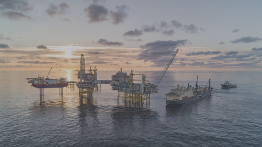
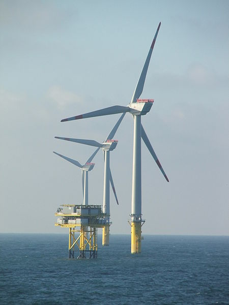
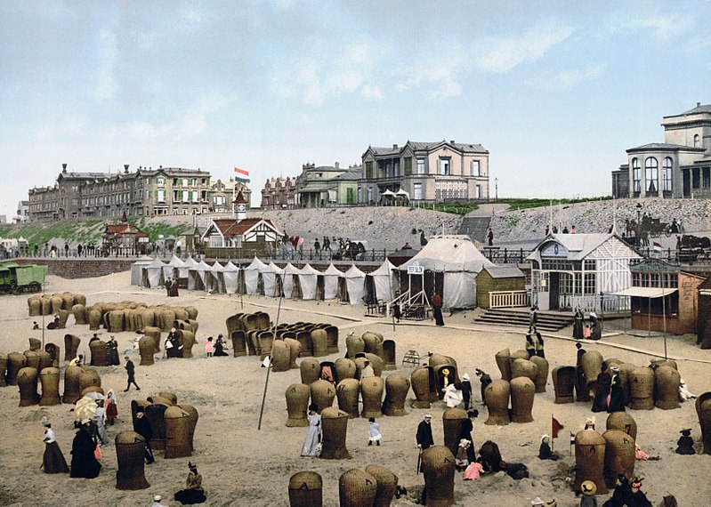
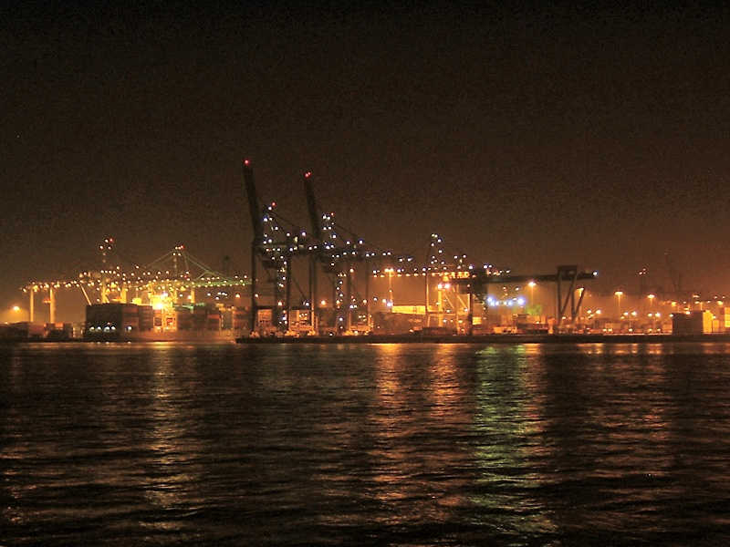

Все страны, которые граничат с Северным морем, требуют 12 морских миль (22 км; 14 миль) от территориальных вод , в пределах которых они имеют исключительные права на рыболовство. Общая политика рыболовства в Европейском союзе (ЕС) существует, чтобы скоординировать права на рыболовство и помощь в спорах между государствами ЕС и границей государством ЕС Норвегии.
После открытия полезных ископаемых в Северном море Конвенция о континентальном шельфе установила права страны, в значительной степени разделенные по срединной линии. Срединная линия определяется как линия «каждая точка которой равноудалена от ближайших точек базовых линий, от которых измеряется ширина территориального моря каждого государства». Граница океанского дна между Германией, Нидерландами и Данией была перераспределена только после длительных переговоров и решения Международного Суда .

Еще в 1859 году нефть была обнаружена в прибрежных районах вокруг Северного моря, а природный газ - еще в 1910 году. Наземные ресурсы, например месторождение K12-B в Нидерландах, продолжают эксплуатироваться и сегодня.
Пробное бурение на шельфе началось в 1966 году, а затем, в 1969 году, Phillips Petroleum Company открыла нефтяное месторождение Экофиск, отличающееся ценным маслом с низким содержанием серы. Коммерческая эксплуатация началась в 1971 году с танкеров, а после 1975 года - по трубопроводу , сначала в Тиссайд , Англия, а затем, после 1977 года, также в Эмден , Германия.
Эксплуатация запасов нефти в Северном море началась незадолго до нефтяного кризиса 1973 года , а рост мировых цен на нефть сделал крупные инвестиции, необходимые для добычи, гораздо более привлекательными. Запуск в 1973 году запасов нефти Соединенным Королевством позволил им остановить сокращение позиций в международной торговле в 1974 году и огромный рост после открытия и эксплуатации огромного нефтяного месторождения группой Филлипса в 1977 году в качестве месторождения Бре.
Хотя производственные затраты относительно высоки, качество нефти, политическая стабильность в регионе и близость важных рынков в Западной Европе сделали Северное море важным нефтедобывающим регионом. Самой крупной гуманитарной катастрофой в нефтяной промышленности Северного моря стало разрушение морской нефтяной платформы Piper Alpha в 1988 году, в результате которой погибли 167 человек.
Помимо нефтяного месторождения Экофиск, нефтяное месторождение Statfjord также примечательно, поскольку оно стало причиной появления первого трубопровода, проложившего норвежский желоб . Крупнейшее месторождение природного газа в Северном море, газовое месторождение Тролль , находится в норвежском желобе, глубина которого составляет более 300 метров (980 футов), и для доступа к нему требуется огромная платформа Troll A.
Цена на нефть марки Brent , один из первых видов нефти, добываемой в Северном море, сегодня используется в качестве стандартной цены для сравнения нефти, добываемой в остальном мире. Северное море содержит крупнейшие запасы нефти и природного газа в Западной Европе и является одним из ключевых в мире регионов, не производящих ОПЕК.
В британском секторе Северного моря нефтяная отрасль инвестировала 14,4 млрд фунтов стерлингов в 2013 году и планировала потратить 13 млрд фунтов стерлингов в 2014 году. Отраслевая отрасль Oil & Gas UK объяснила это снижением затрат, снижением добычи, высокими налогами ставки и меньше разведки.
По состоянию на январь 2018 года в регионе Северного моря насчитывается 184 морских буровых вышки, что делает его регионом с наибольшим количеством морских буровых установок в мире.
Северное море является основным рыбным промыслом в Европе, на его долю приходится более 5% международной промысловой рыбы. Рыбалка в Северном море сосредоточена в южной части прибрежных вод. Основным методом ловли является траление . В 1995 году общий объем рыбы и моллюсков, выловленных в Северном море, составил около 3,5 млн. Тонн. Подсчитано, что помимо рыбы ежегодно вылавливается и выбрасывается один миллион тонн не подлежащего сбыту прилова.
В последние десятилетия из-за чрезмерного вылова многие виды рыбного промысла оказались непродуктивными, что нарушило динамику морских пищевых цепочек и привело к удорожанию рабочих мест в рыбной промышленности . Промысел сельди, трески и камбалы может вскоре столкнуться с тем же бедствием, что и промысел скумбрии, который прекратился в 1970-х годах из-за чрезмерного вылова рыбы. Цель Общей политики Европейского союза в области рыболовства состоит в том, чтобы свести к минимуму воздействие на окружающую среду, связанное с использованием ресурсов, путем сокращения выбросов рыбы, повышения продуктивности рыболовства, стабилизации рынков рыболовства и переработки рыбы и поставки рыбы по разумным ценам для потребителя.
Китобойный промысел был важной экономической деятельностью с 9 по 13 век для фламандских китобоев. Средневековые фламандские, баскские и норвежские китобойные суда, которых в 16 веке заменили голландцы, англичане, датчане и немцы, захватили огромное количество китов и дельфинов и почти истощили нужных китов. Эта деятельность, вероятно, привела к исчезновению атлантической популяции некогда обычного серого кита . К 1902 году китобойный промысел закончился. После отсутствия в течение 300 лет ни одного серого кита вернулся, вероятно, он был первым из многих, кто пробился через ныне свободный ото льда Северо - Западный проход.
Из-за сильных ветров и мелководья страны Северного моря, в частности Германия и Дания, использовали берег для ветровой энергетики с 1990-х годов. Северное море является домом для одной из первых в мире крупных морских ветряных электростанций , Horns Rev 1, строительство которой было завершено в 2002 году. С тех пор в Северном море (и в других местах) были введены в эксплуатацию многие другие ветряные электростанции . По состоянию на 2013 год лондонский массив мощностью 630 мегаватт (МВт) является крупнейшей оффшорной ветряной электростанцией в мире, а ветряная электростанция Greater Gabbard мощностью 504 (МВт) является второй по величине, за ней следует ветровая электростанция Уолни мощностью 367 МВт . Все у побережья Великобритании. Эти проекты будут затмеваться последующими ветряными электростанциями, которые находятся в стадии разработки, включая Банк Доггер на 4800 МВт, Банк Норфолк (7200 МВт) и Ирландское море (4200 МВт). По состоянию на конец июня 2013 года суммарная мощность ветроэнергетики в Европе составила 6040 МВт. Великобритания установила 513,5 МВт оффшорной ветроэнергетики в первом полугодии 2013 года.
Расширение морских ветровых электростанций встретило некоторое сопротивление. Обеспокоенность включала столкновения судов и воздействие на окружающую среду на экологию океана и дикую природу, таких как рыба и перелетные птицы, однако эти проблемы оказались незначительными в долгосрочном исследовании в Дании, опубликованном в 2006 году, и снова в исследовании правительства Великобритании в 2009 году. Также существуют проблемы с надежностью и растущими затратами на строительство и обслуживание морских ветряных электростанций. Несмотря на это, развитие ветроэнергетики в Северном море продолжается, и планируется строительство дополнительных ветряных электростанций у берегов Германии, Нидерландов и Великобритании. Также были предложения по созданию транснациональной электросети в Северном море для подключения новых морских ветряных электростанций.
Производство энергии из приливов и отливов все еще находится в стадии до коммерческой эксплуатации. Европейский морской энергетический центр установил систему тестирования волны на Billia Croo на материке Оркнейских и приливной тестирования мощности станции на соседнем острове Эдей . С 2003 года в фьорде Ниссум Бреднинг на севере Дании работает прототип преобразователя энергии Wave Dragon .
Пляжи и прибрежные воды Северного моря - это места для туристов. Бельгийское, голландское, немецкое и датское побережья разрабатываются для туризма. На побережье Северного моря Соединенного Королевства есть туристические направления с пляжными курортами и полями для гольфа. Файф в Шотландии славится ссылки полей для гольфа; Прибрежный город Сент-Эндрюс известен как «Дом Гольфа». Побережье северо-восточной Англии имеет несколько туристических городов, таких как Скарборо , Бридлингтон , Сихауз , Уитби , Робин Гудс Бэй и Ситон Карью , а также несколько длинных песчаных пляжей и мест для игры в гольф, таких как Гольф-клуб Seaton Carew и Гольф-клуб Госвик.
Северное море Trail является междугородней трассой связывая семи стран вокруг Северного моря. Виндсерфинг и парусный спорт являются популярными видами спорта из-за сильного ветра. Mudflat туризм , рекреационная рыбалка и наблюдение за птицами среди других видов деятельности.
Климатические условия на побережье Северного моря считаются благоприятными. Еще в 19 веке путешественники посетили побережье Северного моря для лечебных и оздоровительных каникул. Морской воздух, температура, ветер, вода и солнечный свет считаются одними из благоприятных условий, которые, как говорят, активируют защитные силы организма, улучшают кровообращение, укрепляют иммунную систему и оказывают лечебное воздействие на кожу и дыхательную систему.
Северное море важно для морского транспорта, и его судоходные пути являются одними из самых оживленных в мире. Основные порты расположены вдоль его побережья: Роттердам , самый оживленный порт в Европе и четвертый по загруженности порт в мире по величине тоннажа по состоянию на 2013 год, Антверпен (был 16-м) и Гамбург (был 27-м), Бремен / Бремерхафен и Феликсстоув , оба в 30 самых загруженных контейнерных морских портов , а также порт Брюгге-Зебрюгге , ведущий порт Европы ро-ро.
Рыболовные суда, обслуживание лодки для морской промышленности, спорта и прогулочных судов и торговых судов и из портов Северного моря и балтийские порты должны обмениваться маршрутами на Северном море. Один только Доверский пролив принимает более 400 коммерческих судов в день. Из-за этого объема навигация в Северном море может быть затруднена в зонах с интенсивным движением, поэтому в портах созданы сложные службы движения судов для контроля и направления судов в порт и из порта.
Побережья Северного моря являются домом для многочисленных каналов и систем каналов для облегчения движения между реками, искусственными гаванями и морем. Киль канал , соединяющий Северное море с Балтийским морем, является наиболее широко используемым искусственным фарватер в мире отчетности в среднем 89 судов в день , не включая спортивных катеров и других малых плавсредств в 2009 году экономит в среднем 250 морских миль (460 км; 290 миль), вместо плавания вокруг полуострова Ютландия . Канал Северного моря соединяет Амстердам с Северным морем.